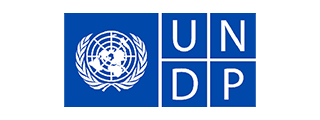
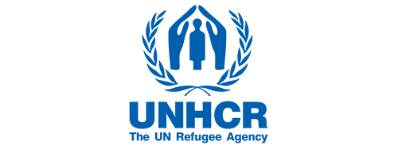
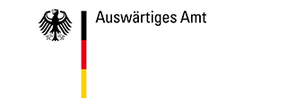

Hudara is supported by these organizations




We strive for cultural and contextual sensitivity and act according to needs, resources and goals of the communities we work with. We orient our actions on research findings and international guidelines. Participation and the obligation to respect human rights have top priority.
We have put the topics of wellbeing and mental health, life under the impacts of climate change and social development through access to renewable energy at the core of our organisational purpose.
We attend to community narratives, documentation of daily experiences, perceptions and future ideas. We value and collect cultural productions and critical engagements of social movements that are often marginalised. We describe and analyse our activities and interventions and we draw attention to innovative new ways in wellbeing, mental health and adaptations to climate change.
Read and get inspired!
Hudara is supported by these organizations
Hudara :: Standing with communities,
Non-profit non-governmental organization